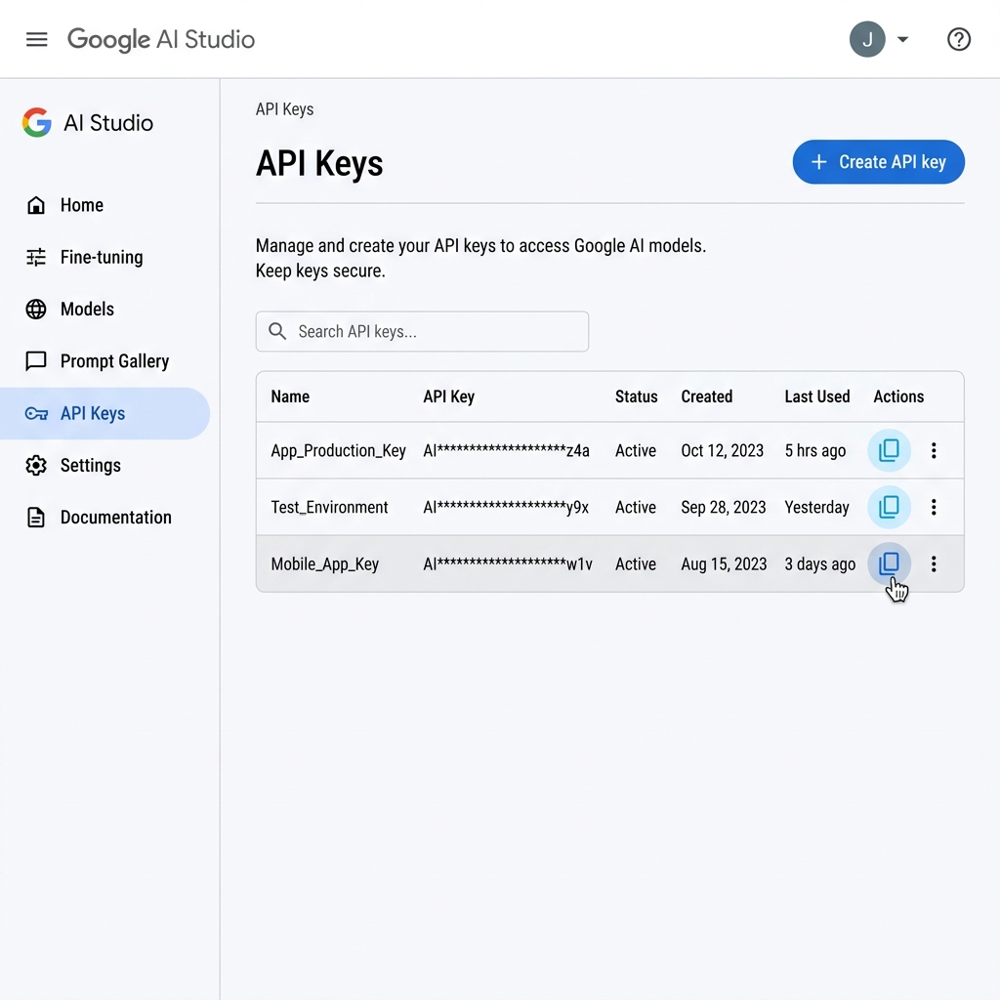
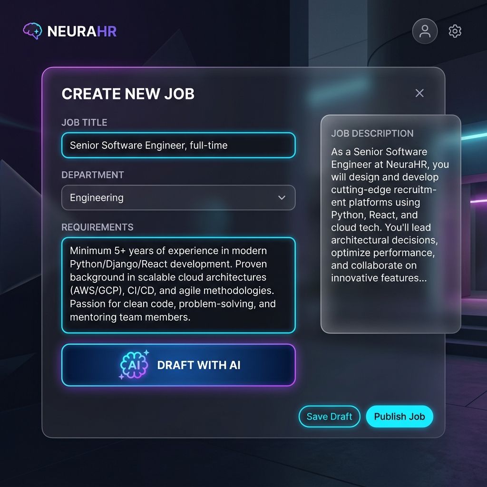
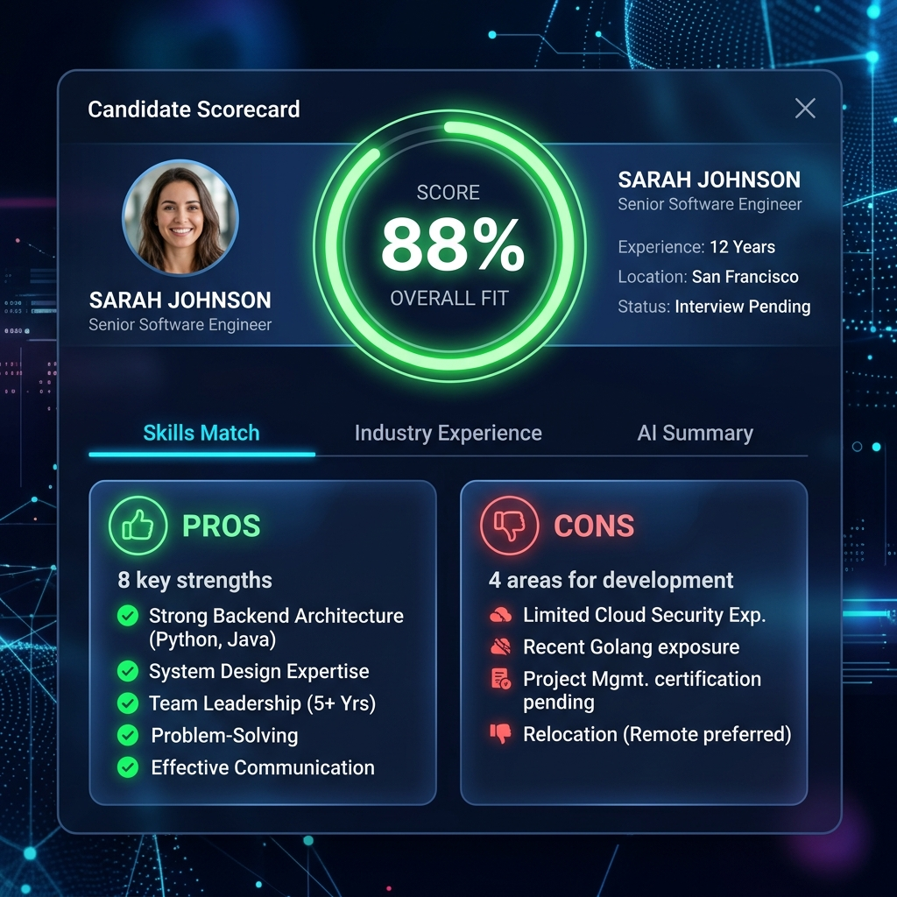
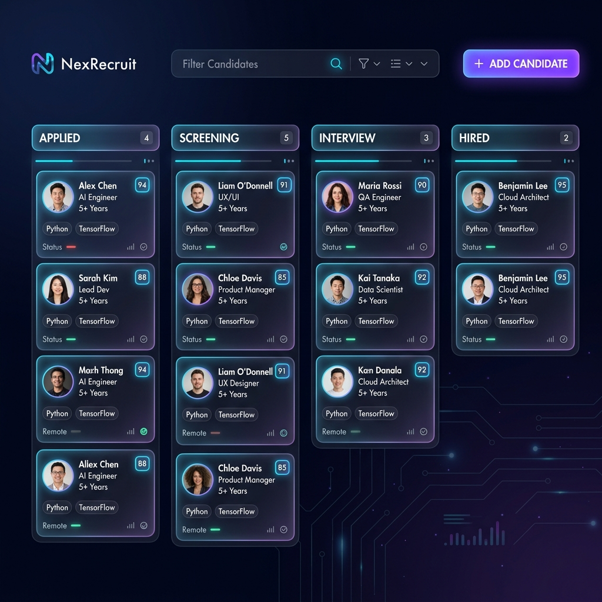
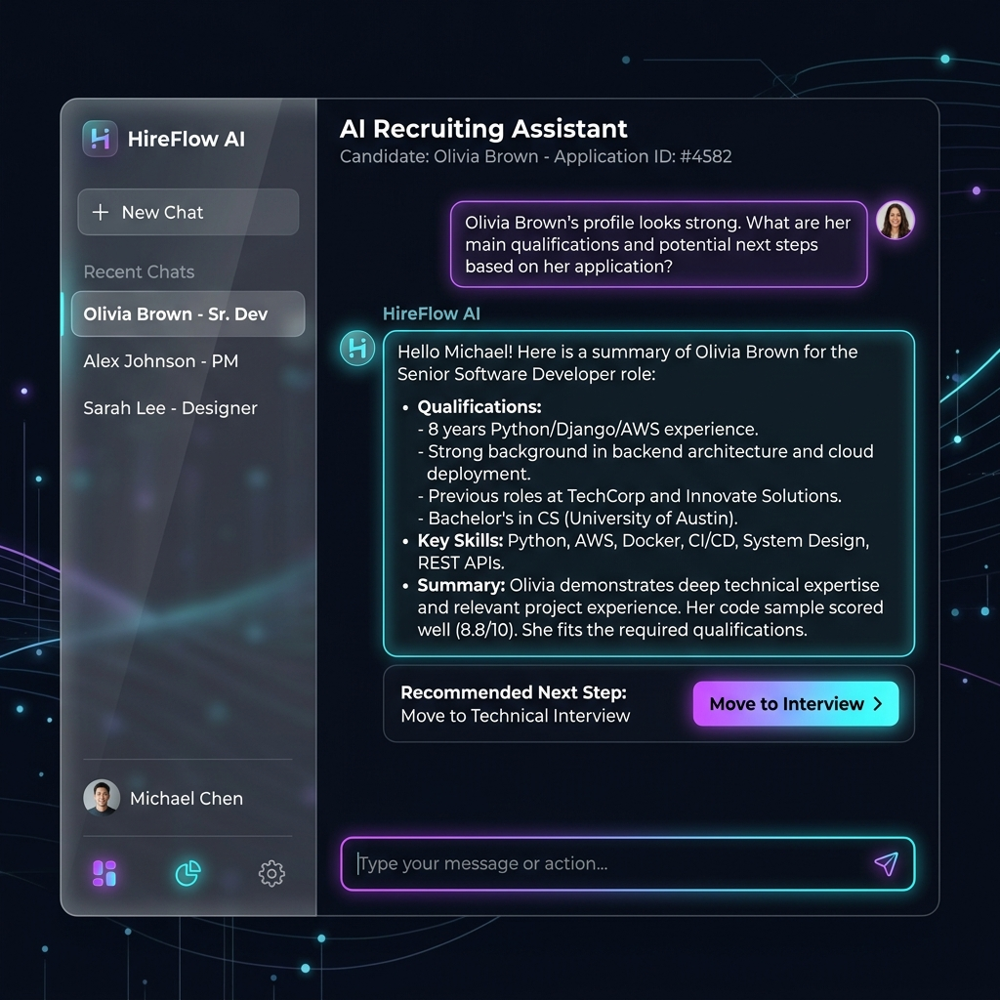

From intelligent CV parsing to autonomous chat actions, master every feature of the AI Recruitment Intelligence System (2026 Edition).
من تحليل السير الذاتية الذكي إلى إجراءات الدردشة المستقلة، احترف كل ميزة في نظام ذكاء التوظيف (إصدار 2026).
To power the AI analysis, you must obtain a Gemini API key from Google AI Studio. This key is your connection to the neural engine.
لتشغيل تحليل الذكاء الاصطناعي، يجب عليك الحصول على مفتاح Gemini API من Google AI Studio. هذا المفتاح هو وصلتك بالمحرك العصبي.
Visit Google AI Studio, log in with your Google account, and click "Get API key" in the sidebar.
قم بزيارة Google AI Studio، وسجل الدخول بحساب Google الخاص بك، ثم انقر فوق "الحصول على مفتاح API" في القائمة الجانبية.

Open Settings in SILA, paste your key into the "Gemini API Key" field, and click Save.
افتح الإعدادات في SILA، والصق مفتاحك في حقل "Gemini API Key"، ثم انقر فوق حفظ.
Create and manage the positions you are hiring for. The AI uses these requirements as the benchmark for scoring every candidate.
قم بإنشاء وإدارة المناصب التي توظف لها. يستخدم الذكاء الاصطناعي هذه المتطلبات كمعيار لتقييم كل مرشح.
Don't write descriptions manually. Type a simple prompt like "I need a Senior React Dev who knows AWS", and SILA will generate a structured title, description, and requirement list instantly.
لا تكتب الأوصاف يدوياً. اكتب أمراً بسيطاً مثل "أحتاج إلى مطور React أول يعرف AWS"، وسيقوم SILA بإنشاء عنوان ووصد وقائمة متطلبات منظمة على الفور.

The requirements array (JSON) dictates exactly what the Gemini model looks for in CVs. Update them anytime to shift the AI's focus.
تحدد مصفوفة المتطلبات بدقة ما يبحث عنه نموذج Gemini في السير الذاتية. قم بتحديثها في أي وقت لتغيير تركيز الذكاء الاصطناعي.
Upload PDFs directly. SILA uses Gemini's multimodal OCR to perfectly extract text, bypassing traditional parser errors.
قم برفع ملفات PDF مباشرة. يستخدم SILA تقنية التعرف البصري (OCR) من Gemini لاستخراج النص بدقة تامة، متجاوزاً أخطاء المحللات التقليدية.
Connect your HR inbox (Gmail/Outlook). SILA monitors incoming emails, extracts attached CVs, and automatically creates candidates in your pipeline.
اربط صندوق بريد الموارد البشرية (Gmail/Outlook). يراقب SILA رسائل البريد الواردة، ويستخرج السير الذاتية المرفقة، وينشئ المرشحين تلقائياً.
Once a CV is in the system, Gemini 3.1 breaks it down into structured data using our proprietary Matryoshka Scoring system.
بمجرد دخول السيرة الذاتية إلى النظام، يقوم Gemini 3.1 بتقسيمها إلى بيانات منظمة باستخدام نظام تقييم "ماتريوشكا" الخاص بنا.
Candidates receive specific scores (0-100) for:
يحصل المرشحون على درجات محددة (0-100) في:

Beyond numbers, SILA generates:
أبعد من الأرقام، يُنشئ SILA:
Visualize your hiring process. Candidates move through standardized stages: Applied → Screening → Interview → Offered → Hired (or Rejected).
قم بتصور عملية التوظيف الخاصة بك. ينتقل المرشحون عبر مراحل قياسية: مُتقدم → فرز → مقابلة → معروض عليه → مُعين (أو مرفوض).

The crown jewel of SILA. This isn't just a chatbot; it's an autonomous agent hooked directly into your database. It uses Hybrid Search (Semantic + Text) and Function Calling to do the work for you.
جوهرة التاج في SILA. هذا ليس مجرد روبوت دردشة؛ إنه وكيل مستقل متصل مباشرة بقاعدة بياناتك. يستخدم البحث الهجين واستدعاء الوظائف للقيام بالعمل نيابة عنك.

SILA adapts to your company's hiring culture through the Settings panel.
يتكيف SILA مع ثقافة التوظيف في شركتك من خلال لوحة الإعدادات.
Toggle on PII Masking to ensure candidate emails and phone numbers are hidden from standard views for unbiased initial screening.
قم بتفعيل إخفاء البيانات لضمان إخفاء رسائل البريد الإلكتروني وأرقام هواتف المرشحين لفرز أولي غير متحيز.
Force the AI to output its analysis, strengths, and recommendations in English, Arabic, or let it choose dynamically.
أجبر الذكاء الاصطناعي على إخراج تحليلاته وتوصياته باللغة الإنجليزية أو العربية، أو دعه يختار ديناميكياً.
Switch between Gemini 3.1 Flash Lite for blazing fast bulk processing, or Gemini 3.1 Pro for deep, complex reasoning.
بدل بين Gemini 3.1 Flash Lite للمعالجة الجماعية السريعة، أو Gemini 3.1 Pro للتفكير المعقد والعميق.
Set to Strict Mode to heavily penalize missing requirements, or Balanced for holistic evaluation.
اضبط على النمط المتشدد لمعاقبة المتطلبات المفقودة بشدة، أو متوازن للتقييم الشامل.